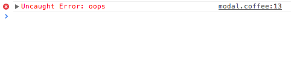
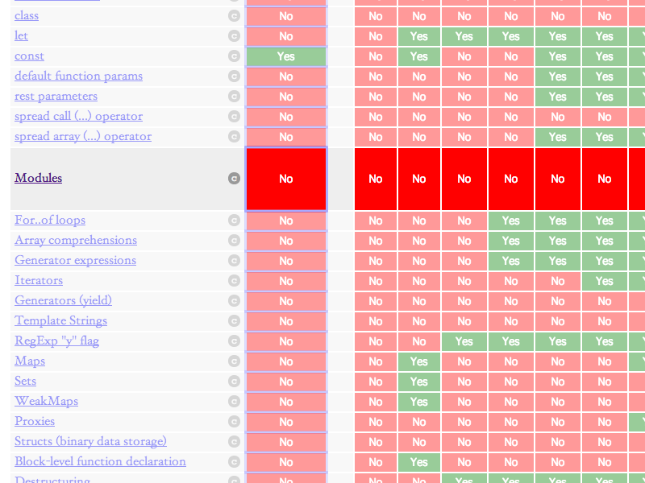

Andrey Popp · @andreypopp · github.com/andreypopp
MoscowJS Meetup
Browserify это...
- CommonJS API для модулей
- npm для управления зависимостями
- ... для разработки браузерных приложений
% npm install backbone % npm list . └─┬ backbone@1.0.0 └── underscore@1.5.1
var Backbone = require('backbone')
module.exports = ...Использование из командной строки
% browserify ./app.js > bundle.js
... или используя API
var browserify = require('browserify')
browserify(['./app.js'])
.bundle()
.pipe(process.stdout)Browserify это...
модули стандартной библиотеки Node.js, которые работают в бразуере: events, stream, querystring, url, util, http, path, assert, buffer, vm, crypto...
Browserify это...
эмуляция __dirname, __filename, process.nextTick() и других Node-измов
Browserify это...
Возможность писать код, который работает как в браузере, так и в Node.js
Почему npm?
- "Маленькие компонуемые модули"
- А это идеально для разработки для браузера!
Философия browserify
- Все "по-максимуму" как в Node.js
- Все зависимости "резольвятся" статически
- Минимальный набор функциональности
% browserify --help
Если чего-то не хватает...
..."скриптуем" используя API
browserify()
.add('./index.js')
.require('./vendor/lib.js')
.external('./common.bundle.js')
.bundle({debug: true})
.pipe(fs.createWriteStream('./out.js'))Browserify отлично подходит как основа для систем сборки JavaScript кода
externalize *
Создание нескольких бандлов для их последующей ленивой подгрузки.
Читаем как использовать.
npm install externalize
Бандлы в UMD * формате
Включают в себя UMD-обвязку.
Позволяет использовать бандл как AMD модуль и экспортирует "точку входа" как атрибут window.
Unified Module Format
% browserify --standalone MyLib ...
Но у меня есть любимый jQuery плагин...
... который не является CommonJS модулем.
browserify-shim *
Превращает код, который экспортирует window атрибут в CommonJS модуль, позволяя указать зависимости.
Аналогично shim в require.js
deamdify
Превращает AMD модуль в CommonJS модуль.
Но у меня есть любимый jQuery плагин...
... который не распространяется через npm
debowerify и decomponentify
Используем пакеты, установленные с помощью bower или component
Все компонуется со всем...
Используем компоненты из bower и component, понимаем AMD модули:
% browserify --transform debowerify --transform decomponentify --transform deamdify ./app.js
...или тоже самое, используя API
browserify(['./app.js'])
.transform('debowerify')
.transform('decomponentify')
.transform('deamdify')
.bundle()
.pipe(process.stdout)Если хочется большего...
... лучше вообще не использовать browserify
Browserify это всего лишь обвязка для module-deps и browser-pack.
Каждый из которых можно использовать самостоятельно.
% module-deps ./app.js
[
{id: './index.js', code: '...', deps: [...]},
{id: './node_modules/backbone/backbone.js', ...},
{id: './node_modules/underscore/underscore.js', ...}
]
% module-deps ./app.js | browser-pack > bundle.jsА что если...
... require('./app.coffee')
... require('./app.ts')
... require('./template.handlebars')
... или даже require('./app.сss')
... и require('./spinner.gif')
Преобразования *
Преобразуют содержимое модуля в валидный JavaScript код.
transforms
% npm install coffeeify % browserify --transform coffeeify ...
...
- typeify для TypeScript
- liveify для LiveScript
- icsify для IcedCoffeeScript
Browserify это...
... возможность использовать несколько языков внутри одного проекта с единой системой модулей через один интегрированный шаг сборки
brfs
var x = fs.readFileSync(filename)
превращается в
var x = [содержимое filename]
npmjs.org/search?q=browserify
- hbsfy для Handlebars шаблонов
- ejsify для EJS
- es6ify для ECMAScript6
- sweetify для поддержки Sweet.js
- ...
Что делать со статикой?
CSS, изображения, шрифты, ...
% ls ./fancy_button index.js styles.css icons.woff spinner.gif
% cat ./fancy_button/index.js
require('./spinner.gif')
require('./styles.css')
require('./icons.woff')
module.exports = ...% npm install fancy_button
var MyFancyButton = require('fancy_button')CommonJS asset spec
Пока в разработке
Разработка с browserify
Node.js ? connect-browserify : watchify
- Следит за изменениями кода
- Агрессивно кэширует
- Быстрая пересборка бандла
Source maps из коробки
При использовании --debug сборки.
OK, но почему не...
- bower, AMD, require.js
- component
- ECMAScript Harmony Modules
- что-то ещё...
CommonJS > AMD
npm > bower + component
ECMAScript Harmony Modules
Общий код на сервере и на клиенте!
Demo: пре-рендеринг UI на сервере
Используя Browserify + React